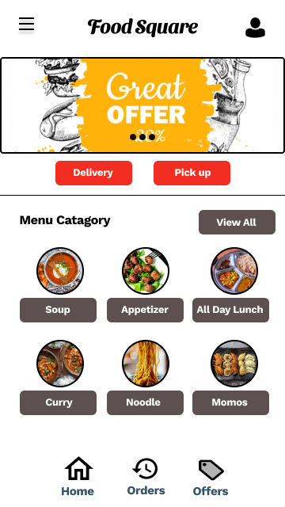

<!DOCTYPE html>
<html lang="en">

<head>
  <meta charset="utf-8">
  <meta content="width=device-width, initial-scale=1.0" name="viewport">

  <title></title>
  <meta content="" name="description">
  <meta content="" name="keywords">

  <!-- Favicons -->
  <link href="assets/img/favicon.png" rel="icon">
  <link href="assets/img/apple-touch-icon.png" rel="apple-touch-icon">

  <!-- Google Fonts -->
  <link href="https://fonts.googleapis.com/css?family=Open+Sans:300,300i,400,400i,600,600i,700,700i|Raleway:300,300i,400,400i,500,500i,600,600i,700,700i|Poppins:300,300i,400,400i,500,500i,600,600i,700,700i" rel="stylesheet">

  <!-- Vendor CSS Files -->
  <link href="assets/vendor/aos/aos.css" rel="stylesheet">
  <link href="assets/vendor/bootstrap/css/bootstrap.min.css" rel="stylesheet">
  <link href="assets/vendor/bootstrap-icons/bootstrap-icons.css" rel="stylesheet">
  <link href="assets/vendor/boxicons/css/boxicons.min.css" rel="stylesheet">
  <link href="assets/vendor/glightbox/css/glightbox.min.css" rel="stylesheet">
  <link href="assets/vendor/swiper/swiper-bundle.min.css" rel="stylesheet">

  <!-- Template Main CSS File -->
  <link href="assets/css/style.css" rel="stylesheet">

  <!-- =======================================================
  * Template Name: MyResume - v4.7.0
  * Template URL: https://bootstrapmade.com/free-html-bootstrap-template-my-resume/
  * Author: BootstrapMade.com
  * License: https://bootstrapmade.com/license/
  ======================================================== -->
</head>

<body>

  <main id="main">

    <!-- ======= Portfolio Details Section ======= -->
    <section id="portfolio-details" class="portfolio-details">
      <div class="container">

        <div class="row gy-4">

          <!-- <div class="col-lg-8">
            <div class="portfolio-details-slider swiper">
              <div class="swiper-wrapper align-items-center">

                <div class="swiper-slide">
                  
                </div>

                <div class="swiper-slide">
                  
                </div>

                <div class="swiper-slide">
                  
                </div>

              </div>
              <div class="swiper-pagination"></div>
            </div>
          </div> -->

          
            <!-- <div class="portfolio-info">
              <h3>Project information</h3>
              <ul>
                <li><strong>Food Square Mobile Ordering App</strong></li>
                
              </ul>
            </div> -->
            <div class="portfolio-description">
              
              <div>
                
              </div>
              <div>
                
              </div>
              <div>
                
              </div>
              <div>
                
              </div>
              <div>
                
              </div>
              <div>
                
              </div>
              <div>
                
              </div>
              <div>
                
              </div>
              <div>
                
              </div>
              <div>
                
              </div>
              <div>
                
              </div>
             <!-- <p></p>
              <h3>The Problem  </h3> Busy workers and commuters who has lake of time to prepare meal. </p>	
              <h3>The Goal  </h3> With the mobile app, customers can easily browse all the dishes the restaurant has available,
                  customize dishes to their requirements  and place an order. It can also save their favorite orders allowing them to 
                  easily re-order that in the future.
              </p>
              <h3> Research</h3>
                <p>I conducted interviews and created empathy maps to understand the users I’m designing for and their needs. A primary user
                group identified through research was working adults who don’t have time to cook meals.
                This user group confirmed initial assumptions about Food Square customers, but research also revealed that time was
                not the only factor limiting users from cooking at home. Other user problems included obligations, interests, or challenges
                that make it difficult to get groceries for cooking or go to restaurants in-person.
                </p>

              <h3>Problem Definition</h3>
                <p>The mobile aggregator is an application that combines various thematic platforms in order to
                increase their level of sales and ensure the convenience of the choice of dishes and drinks
                by users. A distinctive feature of the application is a single design, user-friendly interface.
                </p>
                <P>I decided to create competing app where to make an order should be as simple as few clicks on
                mobile device. And it should be easy to understand and informative about the options and
                choices the users have.
                </p>
                <p>
                  
                  </p>
                  <h3>Process</h3>
                  <p>	I’ve started the process with competitive research and I identified top three competitors.
                  Analyzing and comparing the content of their apps helped me to determine the direction
                  of development for Food Square application.
                  Further, to build empathy with users, I started off with a set of casual interviews. This resulted in a preliminary set of requirements and creating User Personas.
                  </p>
                  <h3>Personas</h3>
                  <p>Upon research and talking to a lot of my friends from different organizations, colleagues and extensive search on google has given me enough data, to sum up,
                  their experience into the following two personas.
                  </p>
                  <p></p>
               <p></p>   
               <p></p>

               <p></p>

                <h3>Journey Maps</h3>
                <p>Now that I understood what the goals, pain points of customers, the next
                step is to map their journey. Journey Mapping helps us to group different
                actions performed at a particular stage of food ordering. Now, when we map
                the stages with actions, we’ll be able to see and understand the challenges
                faced and look for scope of improvement wherever there is.
                </p>

                <h3>Proposed Solution</h3>

                <p>The traditional food ordering in restaurant is time-consuming and
                hectic for employees. My hypothesis is that by making the food ordering
                system online, we’ll be able to easily navigate through the available
                menu from different vendors, skip long queues, pay online and also
                keep a track of all our orders. This will help the employees to have a
                hassle-free experience in their break time.
                </p>
                <h3>Customer Flow</h3>
                <p>Keeping the goals and the requested features and their feasibility in mind, I’ve laid out a customer flow showing
                the different actions to be performed from logging in to accepting/
                delivering the order and different features available in order to navigate smoothly among the same.</p>

                <p>
                  
                  </p> 
                  <h3> Sketching</h3>
                  <p>Throughout this project, my sketchbook proved invaluable time and time again. Being able to quickly
                  iterate with my sketchbook, I could create and alter ideas with the stroke of a pen. This enabled me to get instant feedback
                  from my peers on marketing and product concepts, allowing me to iterate on concepts rapidly. Wireframes are used early in the
                  development process to establish the basic structure of an app before visual design and content is added. In the ideation phase
                  I created wireframes presenting information architecture of the future layout.
                  </p>
                  
                  <p>
                    
                    </p>
                    <p>
                    
                    </p>
                    <p>
                    
                    </p>
                    
                    
                    
                    <h3>Product Solution</h3>
                    <P>Lo-Fidelity Prototype</P>
                    <p>
                    
                    </p>
                    
                    <h3>HI-FIDELITY PROTOTYPE</h3>
                    <P>Choosing colors for designs in general is not easy. So why can’t we just choose colors for our projects based on
                    how we feel about them or based on the trends? I’ve become more aware that knowing color theory, preferences
                    and background of the client, culture of users and comprehension of your audience and competitors is the best
                    way to choose right color for your project.
                    
                    Researching the competition is the best way to avoid unintentional plagiarism. It will give you an idea of
                    common color threads that run through the other companies (whether they’re using correct colors or not) and it
                    will show you what kind of direction to avoid to ensure that you don’t create something identical.
                    </P>
                    <p>
                    
                    </p>
                    
                    
                    <p>
                    
                    </p>
                    
                    <p>
                    
                    </p>
                    
                    <h3>Mockups</h3>
                    <p>
                    
                    </p>
                    
                    
                    <h3>Takeaways</h3>
                    <p>During the course of creating this project, I learned so many new things like. How to do research, draw paper
                    wireframes, low-fidelity prototype, high-fidelity prototype, how to take interview etc. Usability studies
                    and peer feedback influenced each iteration of the app’s designs.
                    
                    Impact - The app makes users feel like Food square restaurant really thinks about how to meet their needs.
                    </p> -->
                    
                
                    

            </div>
          

        </div>

      </div>
    </section><!-- End Portfolio Details Section -->

  </main><!-- End #main -->

  <div id="preloader"></div>
  <a href="#" class="back-to-top d-flex align-items-center justify-content-center"><i class="bi bi-arrow-up-short"></i></a>

  <!-- Vendor JS Files -->
  <script src="assets/vendor/purecounter/purecounter.js"></script>
  <script src="assets/vendor/aos/aos.js"></script>
  <script src="assets/vendor/bootstrap/js/bootstrap.bundle.min.js"></script>
  <script src="assets/vendor/glightbox/js/glightbox.min.js"></script>
  <script src="assets/vendor/isotope-layout/isotope.pkgd.min.js"></script>
  <script src="assets/vendor/swiper/swiper-bundle.min.js"></script>
  <script src="assets/vendor/typed.js/typed.min.js"></script>
  <script src="assets/vendor/waypoints/noframework.waypoints.js"></script>
  <script src="assets/vendor/php-email-form/validate.js"></script>

  <!-- Template Main JS File -->
  <script src="assets/js/main.js"></script>

</body>

</html>